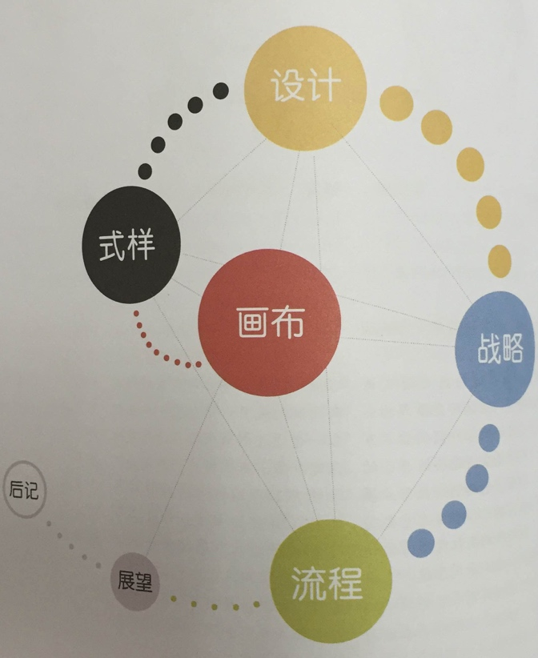
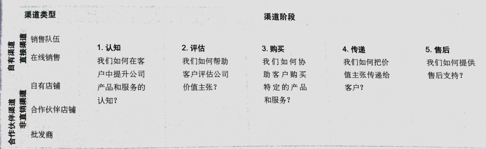

【瑞士】亚历山大.奥斯特瓦德（Alexander Osterwalder）
【比利时】伊夫.皮尼厄(Yves Pigneur)
本书的逻辑：

商业模式--画布

9个构造块
- CS 客户细分：企业或机构所服务的一个或多个客户分类群体。
- VP 价值主张：通过价值主张来解决客户难题和满足客户需求。
- CH 渠道通路：通过沟通、分销和销售渠道向客户传递价值主张。
- CR 客户分类：在每一个客户细分市场建立和维系客户关系。
- R$ 收入来源：收入来源产生于成功提供给客户的价值主张。
- KR 核心资源：提供和交付先前描述要素所必备的重要资产。
- KA 关键业务：通过执行一些关键业务活动，运转商业模式。
- KP 重要合作：有些业务要外包，而另外一些资源需要从企业外部获得。
- C$ 成本结构：商业模式上述要素所引发的成本构成。
客户细分（Customer Segments）
客户构成了任何商业模式的核心。没有（可获益的）客户，就没有企业可以长久存活。为了更好的满足客户，企业可以把客户分成不同的细分区隔，每个细分区隔中的客户具有共同的需求、共同的行为和其他共同的属性。商业模式可以定义一个或多个或大或小的客户细分群体。企业也必须做出合理的决议，到底该服务哪些客户细分群体，该忽略哪些客户细分群体。
客户群体现为独立的客户细分群体，如果：
- 需要和提供明显不同的提供物（产品/服务）来满足客户群体的需求；
- 客户群体需要通过不同的分销渠道来接触；
- 客户群体需要不同类型的关系；
- 客户群体的盈利能力（收益性）有本质区别；
- 客户群体愿意为提供物（产品/服务）的不同方面付费。
客户细分群体存在不同的类型：
- 大众市场
- 利基市场
- 隔化市场
- 多元化市场
- 多变平台或多边市场
价值主张（Value Propositions）
价值主张是客户转向一个公司而非另一个公司的原因，它解决了客户困扰或者满足了客户需求。每个价值主张都包含可选系列产品或服务，以迎合特定客户细分群体的需求。在这个意义上，价值主张是公司提供给客户的受益集合或受益系列。
有些价值主张可能是创新的，并表现为一个全新的或破坏性的提供物（产品或服务），而另一些可能与现存市场提供无类似，只是增加了功能和特性。
简单的要素列表：
- 新颖
- 性能
- 定制化
- 代工
- 设计
- 品牌/身份地位
- 价格
- 成本削减
- 风险抑制
- 可达性
- 便利性/可用性
渠道通路(Channels)
沟通、分销和销售这些渠道构成了公司相对客户的接口界面。渠道通路是客户的接触点，他在客户体验中扮演着重要角色。
渠道通路包含以下功能：
- 提升公司产品和服务在客户中的认知；
- 帮助客户评估公司价值主张；
- 协助客户购买特定产品和服务；
- 向客户传递价值主张；
- 提供售后客户支持。
渠道的5个阶段

客户关系（Customer Relationships）
企业应该弄清楚希望和每个客户细分群体建立的关系类型。客户关系范围可以从人到自动化。客户关系可以被以下几个动机所驱动：
- 客户获取
- 客户维系
- 提升销售额（追加销售）
例如早期移动网络的客户关系由积极的客户获取策略所驱动，包括免费移动电话。当市场饱和后，运营商转而聚焦客户保留以及提升单客户的平均收入。
商业模式所要求的客户关系深刻地影响着全面的客户体验。
客户关系的几种类型：
- 个人助理
- 专用个人助理
- 自助服务
- 自动化服务
- 社区
- 共同创作
收入来源（Revenue Streams）
如果商业模式是心脏，那么收入来源就是动脉。
一个商业模式可以包含两种不同类型的收入来源：
- 通过客户一次性支付获取的交易收入。
- 经常性收入来自客户会获取价值主张与售后服务而持续支付的费用。
以下是一些可以获取收入的方式：
- 资产销售
- 使用收费
- 订阅收费
- 租赁收费
- 授权收费
- 经纪收费（中介）
- 广告收费
定价机制：

核心资源（Key Resources）
核心资源主要包括以下几类：
- 实体资产
- 知识资产
- 人力资源
- 金融资产
关键业务（Key Activities）
关键业务可以分为以下几类：
- 制造产品
- 问题解决
- 平台/网络
重要合作（Key partnerships）
企业会基于多种原因打造合作关系，合作关系正日益成为许多商业模式的基石。很多公司创建联盟来优化其商业模式、降低风险或获取资源。
我们可以把合作关系分为以下四种类型：
- 在非竞争者之间的战略联盟关系；
- 竞合：在竞争者之间的战略合作关系；
- 为开发新业务而构建的合资关系；
- 为确保可靠供应的购买方--供应商关系。
以下三种动机有助于创建合作关系：
- 商业模式的优化和规模经济的运用
- 风险和不确定性的降低
- 特定资源和业务的获取
成本结构（Cost Structure）
在每个商业模式中成本都应该被最小化，但是低成本结构对于某些商业模式来说比另外一些更重要。因此，区分两种商业模式成本结构类型会更帮助，即：成本驱动和价值驱动（很多商业模式的成本结构介于这两种极端模式类型之间）。
成本驱动
侧重于在每个地方尽可能的降低成本。这种做法的目的是创造和维持最经济的成本结构，采用低价的价值主张、最大程度自动化和广泛外包。
价值驱动
专注于创造价值，增值性的价值主张和高度个性化服务通常是以价值驱动型商业模式为特征的。
成本结构有一下几个特点：
- 固定成本
- 可变成本
- 规模经济
- 范围经济